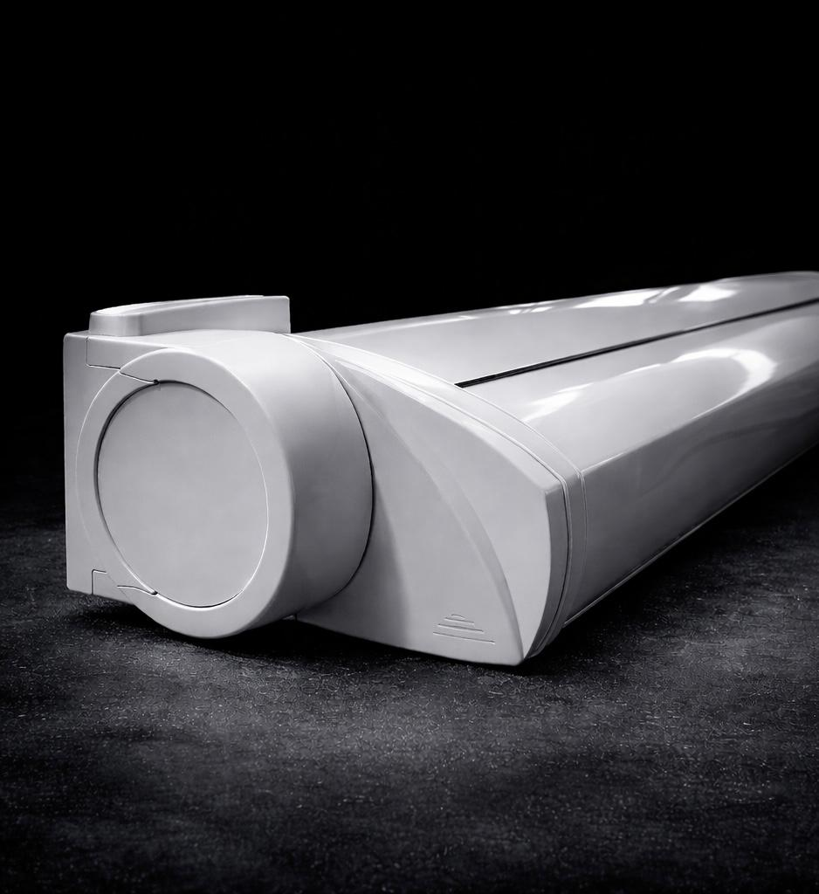
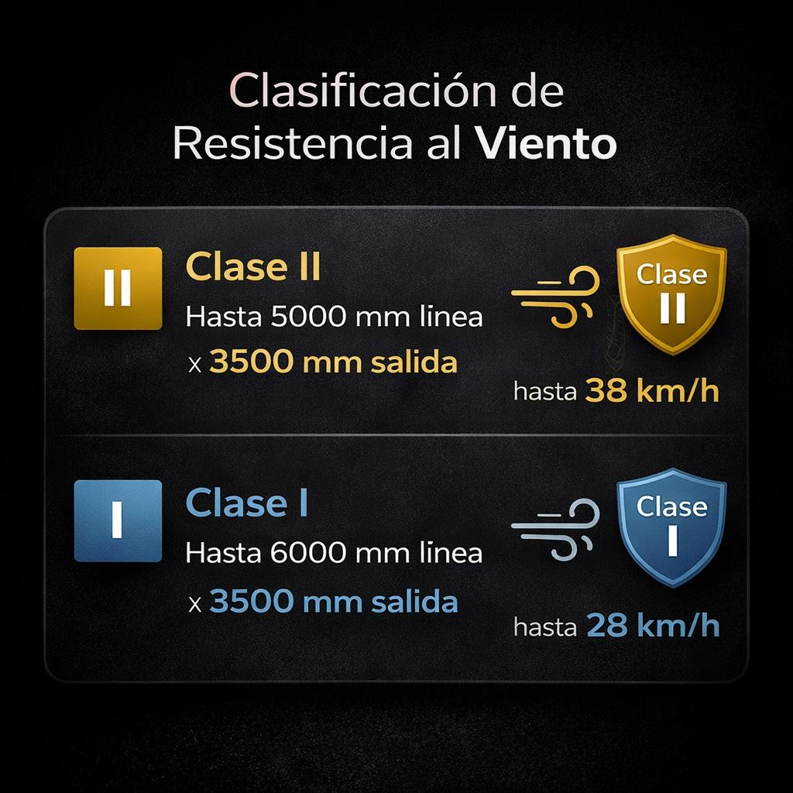
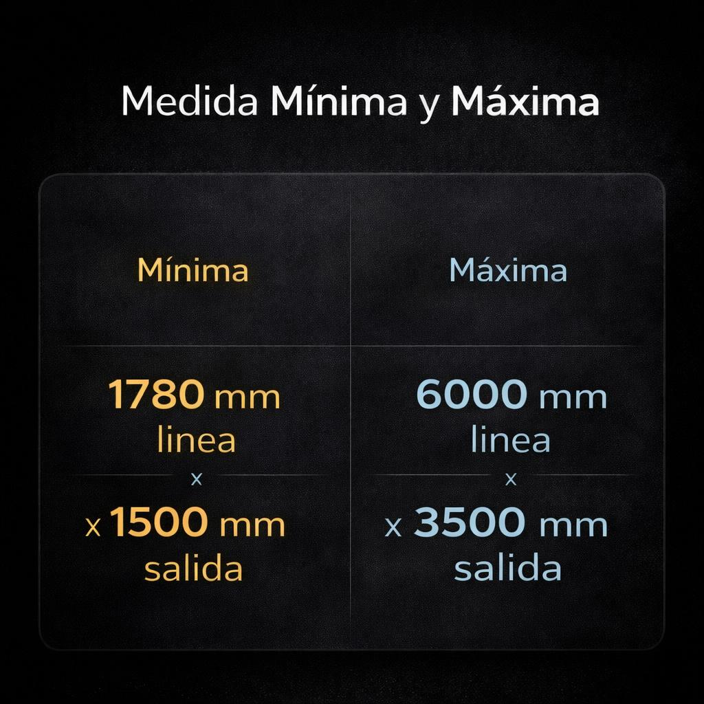

Protección total de la lona y brazos con un diseño compacto y elegante para terrazas y balcones.
Configurar toldoEl toldo cofre Concept está diseñado para proteger completamente la lona y los brazos cuando el sistema está cerrado.
Gracias a su diseño compacto y elegante es una solución ideal para terrazas, balcones y espacios exteriores donde se busca protección solar y una estética limpia.





Accionamiento manual

Accionamiento motorizado

Control desde smartphone
Instalamos toldos cofre Concept en viviendas y terrazas adaptando cada instalación a las necesidades de sombra y estética del espacio.
Toldo cofre Concept en Barcelona | Toldo cofre Concept en Girona
Es un toldo que protege completamente la lona y los brazos cuando está cerrado.
Sí, puede incorporar motor para mayor comodidad.
Sí, puede integrarse con sistemas domóticos.